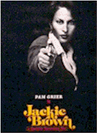
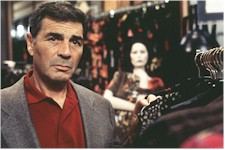
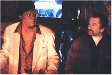
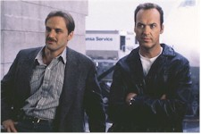

Contents | Features | Reviews | News | Archives | Store |
 |
|
| Movie Credits | Buy It! |
Jackie Brown
Review by Eddie Cockrell
Posted 25 December 1997
|  | Written and Directed for the Screen by Quentin
Tarantino Starring Pam Grier, Samuel L. Jackson,
Robert Forster, Based on the novel "Rum Punch" by Elmore Leonard |
A few years ago, as what must have been an exhausting period of promoting his second feature, Pulp Fiction, wound to a close, writer-director Quentin Tarantino told an interviewer somewhere that what he really wanted to do was follow up that substantial critical and box office success with a movie that didn't have any guns in it.
Just about two years later, among the first images in his reverent yet personalized adaptation of crime novelist Elmore Leonard's 1992 novel "Rum Punch" is a promo film arms dealer Ordell Robbie (Samuel L. Jackson) shows to his sleepy sidekick Louis Gara (Robert De Niro).
The name of that movie-within-a-movie? Chicks Who Love Guns.
This may be an early clue to the attitude the wildly popular, often imitated, perpetually outspoken and undoubtedly influential filmmaker brought to his third feature. "They [journalists] wanted four more Pulp Fictions," he told the New York Times recently. "But why would that be interesting?"
 Impudent? Maybe,
but at the moment, he's got the skills to back his strong opinions and candid public
conversations with viable commercial projects that harness, codify and expand on some
vague vibe that's already floating around and give it a life at once familiar and
exhilaratingly fresh. Sure, there are guns a-plenty in Jackie Brown. But there's
also a significantly smaller body count, a great deal of character-motivated,
authentic-sounding street talk (much of the dialogue is lifted straight from the book and
– here's a compliment – what isn't could have been), and a deliberately
stylized, leisurely approach to the storytelling that suits the material well. "It's
not an epic, it's not an opera," he revealed, "It's a character study."
He's repeated this so often in the past few weeks that it's come to sound suspiciously
like either a warning or an excuse, but in fact it's accurate, and true.
Impudent? Maybe,
but at the moment, he's got the skills to back his strong opinions and candid public
conversations with viable commercial projects that harness, codify and expand on some
vague vibe that's already floating around and give it a life at once familiar and
exhilaratingly fresh. Sure, there are guns a-plenty in Jackie Brown. But there's
also a significantly smaller body count, a great deal of character-motivated,
authentic-sounding street talk (much of the dialogue is lifted straight from the book and
– here's a compliment – what isn't could have been), and a deliberately
stylized, leisurely approach to the storytelling that suits the material well. "It's
not an epic, it's not an opera," he revealed, "It's a character study."
He's repeated this so often in the past few weeks that it's come to sound suspiciously
like either a warning or an excuse, but in fact it's accurate, and true.
So, to get this out of the way: no, Jackie Brown isn't Pulp Fiction 2 and yes, that's a good thing. A very good thing indeed.
In the South Bay area of Los Angeles, amidst the urban sprawl of Compton, Hawthorne and Torrance (the director's childhood stomping grounds), the lives of seven forceful characters are about to intersect in the summer of 1995. Flight Attendant Jackie Brown (Pam Grier) makes a little extra on the side as a runner for Ordell, regularly bringing him modest amounts of cash from his island accounts. Max Cherry (Robert Forster) is the career bail bondsman who falls for Jackie in his own quiet way and teams up with her to take off the arms dealer. ATF agent Ray Nicolet (Michael Keaton) and Los Angeles cop Mark Dargus (Michael Bowen) at first entrap, then encourage Jackie to help them bring Ordell to justice. Meanwhile, Louis is comically seduced into a stoned bargain with Robbie's scheming mistress Melanie (Bridget Fonda) to work a deal for themselves.
These self-centered scams come to a head during a money drop at a fitting room in the Del Amo Fashion Center branch of Billingsley's in a cocksure sequence conceived, shot and edited as an homage to Kurosawa's Rashomon (on second thought, it plays much better than that sounds, as does the nod at The Graduate under the opening credits).
As Tarantino adapted the book, he slightly shifted the order of events, carted the whole thing from Florida to California and did away with some plot strands altogether. So the role of bail bondsman Winston ("Tiny" Lister) is much smaller in the film, and the scenes involving Max and his estranged wife Renee are gone (as are amusing but brutal subplots with neo-Nazi gun freaks and Ordell's army of "jackboy" hench-kids). Mysteriously, Faron Tyler has become Mark Dargus, and the generously proportioned Melanie of the book has morphed a bit to accommodate Fonda's uh, talents (there's a funny bit in the movie where she nods off as a TV shows her father Peter's 1974 B picture Dirty Mary Crazy Larry).
But the most daring, dazzling and successful modification to the book involves the
central role of the white, blond Jackie Burke. Long a fan of Pam Grier's celebrated string
of 1970s blaxploitation pictures that include Hit Man (1972), Coffy and Black
Mama, White Mama (both 1973), Foxy Brown (1974) and Sheba Baby (1975),  Tarantino actually read
the actress for a part in Pulp Fiction (it went to Rosanna Arquette) but didn't get
serious about working with her until he picked up "Rum Punch" ("it just
kind of presented itself to me as a low-budget anti-Hollywood action picture" –
which is exactly what he made). And although Grier never really stopped working (she's in
John Carpenter's Escape from L.A. and Tim Burton's Mars Attacks!), it feels good to see her again in a
role much like the take-charge heroines she used to play. With that soft but formidable
sneer and the cantilevered, hands on hips action (kind of a menacing Mae West), she's a
perfect embodiment of the contradictions in many of Elmore's female characters: fed up but
slightly frightened, they find the courage to step out of stale routines and take a shot
at one big score. Maybe that's why Tarantino changed the character's name – and the
title (besides, the offshore money laundering subplot, codenamed "Rum Punch,"
didn't make the cut either).
Tarantino actually read
the actress for a part in Pulp Fiction (it went to Rosanna Arquette) but didn't get
serious about working with her until he picked up "Rum Punch" ("it just
kind of presented itself to me as a low-budget anti-Hollywood action picture" –
which is exactly what he made). And although Grier never really stopped working (she's in
John Carpenter's Escape from L.A. and Tim Burton's Mars Attacks!), it feels good to see her again in a
role much like the take-charge heroines she used to play. With that soft but formidable
sneer and the cantilevered, hands on hips action (kind of a menacing Mae West), she's a
perfect embodiment of the contradictions in many of Elmore's female characters: fed up but
slightly frightened, they find the courage to step out of stale routines and take a shot
at one big score. Maybe that's why Tarantino changed the character's name – and the
title (besides, the offshore money laundering subplot, codenamed "Rum Punch,"
didn't make the cut either).
If Grier is the soul of the picture, Robert Forster is the aching heart. Known previously – if at all – as the star of TV's "Banyon," he's also in the cult favorites Reflections in a Golden Eye (1966) and Medium Cool (1969). The strength of his performance as the passive but crafty Max comes in close-up, as he shows the same sad-eyed intensity scoping the action in a crowded food court as he does listening to his new favorite song, the one Jackie played when he was first in her apartment. In fact, many of the film's best gags involve the lovestruck Max playing a cassette of the Delfonics 1970 hit "Didn't I (Blow Your Mind This Time)" throughout the picture. It's a masterpiece of morose melancholy.
Jackson is fiercely authentic as the amoral Ordell ("Quentin wants to be black," he said recently), while De Niro's performance is an understated masterstroke of drug-addled stupidity (he's got a great scene with Fonda and an elaborate black ceramic bong). Michael Keaton is fine in a relatively small role, while Michael Bowen is pungent as the slightly racist Dargus and Chris Tucker is barely there in a blink-and-you'll-miss-him cameo early on. Everyone does a first-rate job delivering the complicated, profanely musical dialogue that is the heart and soul of Leonard's work. Even the passages Tarantino modifies remain faithful to the spirit of the book, as with the scene between Jackson and De Niro following the violent end of a particular character (it's featured in the TV trailer); the cadence and brevity of the language in the book is preserved in transition, but sculpted to fit the personas of the actors and the pacing of the scene.
Tarantino's ear for period songs in Jackie Brown can't match Paul Thomas Anderson's selection for Boogie Nights (perhaps itself a bit influenced by Pulp Fiction), but it is still a canny collection of tunes weakened only by the surprise factor missing after all the attention paid to the songs from his previous films. Along with the Delfonics there's Bobby Womack's title tune from Barry Shear's great 1972 action film Across 110th Street, Randy Crawford's "Street Life" from one of the better Burt Reynolds movies (the Laura-inspired 1981 cop saga Sharky's Machine), the great 1968 Grass Roots song "Midnight Confessions," Bloodstone's "Natural High," Johnny Cash's "Tennessee Stud," the Brothers Johnson's "Strawberry Letter 23," Bill Withers' "Who is He (and What is He to You?)," Foxy Brown's "(Holy Matrimony) Letter to the Firm," and others (even Grier gets in on the act, as her performance of "Long Time Woman" from the 1971 women-in-bondage picture The Big Doll House [aka Women's Penitentiary] is dusted off).
In Pulp Fiction, talk often delayed action. In Jackie Brown, talk is action, and this leads to the one stroke of certifiable genius Tarantino brings to the material. Fully embracing the garish, static visual aesthetic of 1970s television shows, he's chosen to film the whole thing like some demented episode of "Starsky and Hutch." It makes sense, when you think about it: the saturated colors (and static, elementary camera angles) of cinematographer Guillermo Navarro (Cabeza de Vaca, Cronos, From Dusk Til Dawn, Mimic) complement the frighteningly accurate costumes of Mary Claire Hannan and the art and set direction of Daniel Bradford and Sandy Reynolds-Wasco (Pulp Fiction fans take note: there's even a Teriyaki Donut outlet in the Del Amo Fashion Center food court), while the cheesy incidental music lifted from the soundtrack of Coffy fits snugly around the occasional blackouts that might be imaginary commercial breaks. Even the credits fit the style, down to the cheap looking "Copyright MCMLXXXXVII" beneath the title card. The name of the production company is another nice in-joke, "Mighty Afrodite" being a simultaneous nod to the movie his girlfriend Mira Sorvino won her Oscar for and Pam Grier's hairstyle of choice a few decades ago. Along with Austin Powers, International Man of Mystery, Jackie Brown is this year's most lovingly tongue-in-cheek tribute to a bygone era (the "Sam Fuller/Thanks for Everything" in the closing credits is a nice final grace note).
At least one predominantly black preview audience howled with glee at all the appropriate moments, although the film's two hour and 35 minute running time may be a challenge to those unprepared for the nature of the material. Nitrate Online's advice? Give it time, let it breathe. "My ass may be dumb but I ain't no dumbass," someone says as the smoke clears, and that's Tarantino all over (even his credit is unique). A subversive, spot-on retooling of an already tight book, Jackie Brown reveals an energetic, gifted filmmaker who may just be good enough to make a movie without guns after all – provided he still wants to.
Contents | Features | Reviews | News | Archives | Store
Copyright © 1999 by Nitrate Productions, Inc. All Rights Reserved.